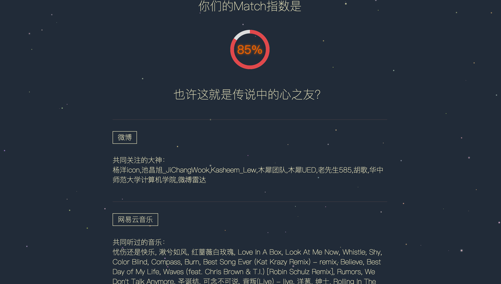

恭喜你，来到了我们的result页面，我们很快就能看到我们的match分数啦~是不是很期待？
我们先来公布一份超级有爱的match结果~

大家可以看到我们的页面上有显示相对应应用中的共同项
这里我决定只显示有共同项的应用版块，这里采用的方法是在判断每一个版块上所返回的字符串是否为空，代码如下，若info.douban.book为空，则v-show=“false”，该板块就不会显示
<div class="common" v-show = "info.douban.book">
<div class="common_t">共同看过的小说：</div>
<div class="common_t">
{{info.douban.book}}
</div>
</div>
</div>
好的，接下来就是我们显示match指数的的百分比图了,动态效果请戳piechart
<template>
...
<svg viewBox = "0 0 32 32">
<circle class="circle" r = "16" cx = "16" cy ="16" v-bind:style = "{strokeDasharray:Math.floor(score) + ' 100'}"></circle>
</svg>
...
</template>
<style>
...
svg{
width: 100px;
height: 100px;
transform: rotate(-90deg);
border-radius: 50%;
}
.circle{
fill:transparent;
stroke:#e1484b;
stroke-width:6px;
animation: fillup 1s ease-out forwards;
}
@keyframes fillup{
from{stroke-dasharray: 0 100;}
}
...
</style>
我们将采用svg标签来画这个百分比图，用stroke属性来实现动态变化效果
svg的viewBox顾名思义就是视区盒子的意思，它覆盖整个svg图，我们在style中定义svg是一个半径为50px的圆，那么viewBox = “0 0 32 32”只是内部将此圆的半径长分为32份，而circle中的r代表此圆的半径，相对于viewBox而言的16，既是整个svg图的一半，cx，cy是其圆心坐标，处于svg图的正中心。
接下来看它的动态效果如何实现，这里我们仍然需要用svg的stroke属性，stroke会沿着svg图像（此处为一个半径为50的圆）的边界划出一条线，我们再用animation属性使其产生变化的效果。这样一个piechart就完成啦
好啦，你还等什么，赶紧去寻找你和你的TA的相同点吧~